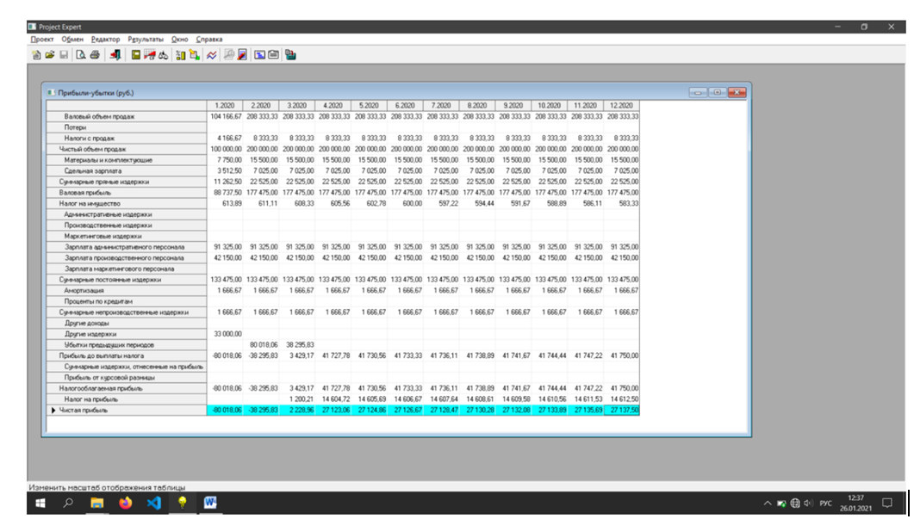
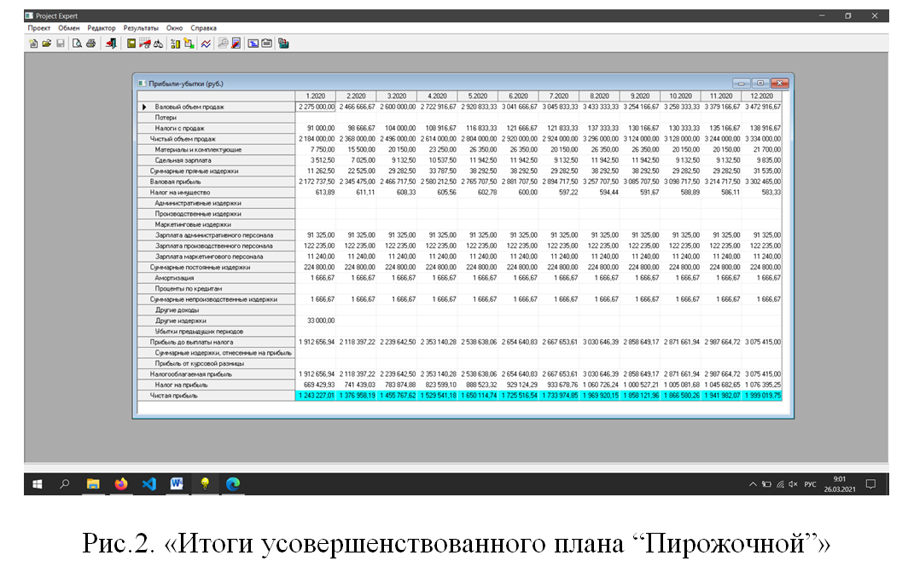
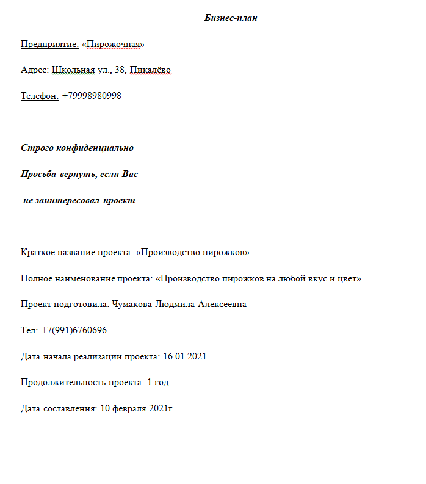

Изначально в Project Expert были вбиты предложенные значения (какое имущество есть у компании, денежный баланс, план по персоналу и производству), однако после этого нам было предложено усовершенствовать этот бизнес-план.
Изначально производство, согласно базовому плану, уходит в большой минус, но спустя 2 месяца оно начинает получать первую прибыль и в конке концов приходит к стабильной прибыли, которая не меняется до конца первого года.
Для того, чтобы усовершенствовать план, я добавила производство ещё 2х побочных товаров, необходимое количество персонала для благоприятной работы на предприятии и подняла количество произведённой продукции примерно в 2 раза.
Результатом стало повышение прибыли примерно в 7 раз, за счёт нужного количества персонала, который стал производить большее количество продукции в месяц, тем самым подняв прибыль предприятия.
Риски нашего проекта, на раннем этапе были многочисленны. Наш проект мог потерпеть неудачу по причине того, что нашим клиентам мог не понравиться производимый нами продукт; Мы могли не найти нужной поддержки и финансирования среди инвесторов; Государство могло прекратить поддержку малого бизнеса и наш проект оказался бы не реализуем. Рисков проекта было на самом деле много, а некоторые из них остаются до сих пор.
